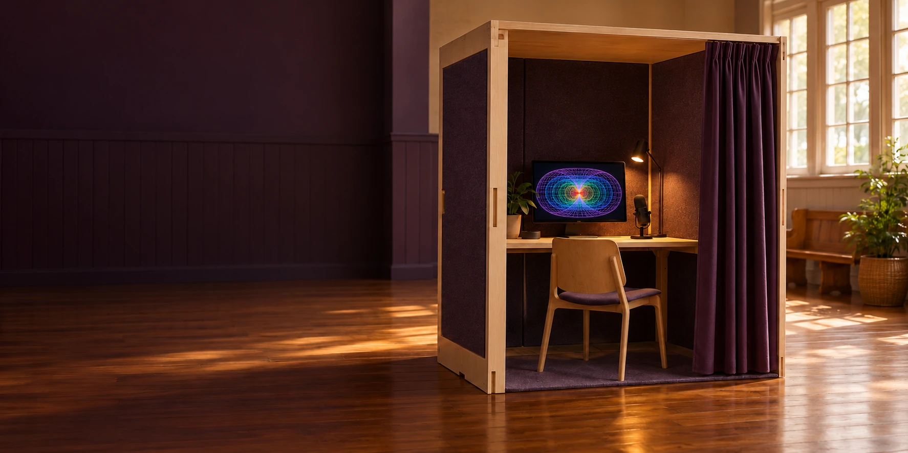

A PROPOSAL FOR A PUBLIC TRIAL
Verse Box
Learn, explore and shape your own path with an Aura that belongs to you. A proposed public introduction for residents and visitors to Minjerribah and Redlands.
What is Verse Box?
Verse Box is a proposal for a portable public demonstration on Minjerribah, also known as North Stradbroke Island, and in the wider Redlands area in Queensland. A trial would give residents and visitors access to demonstrations, equipment and assistance with personal or community projects.
Aura of Intelligence, or Aura, is proposed as a personal artificial intelligence (AI) environment that belongs to its operator and grows with their experience. Its purpose is to help people learn faster, know themselves, think independently and navigate choices across everyday life, work and public participation.
| An interest you might bring | An experience to explore |
|---|---|
| Learn and think | Explore an idea, practise a skill and compare explanations with sources. |
| Live, travel and work | Plan a journey or business activity, or find the rules, services and legal pathways relevant to a situation. |
| Know yourself and create | Reflect on experience, recover project memories, make creative work or explore a measured avatar. |
| Participate in public life | Understand an issue, compare proposals, contribute and follow decisions. |
Hosts, locations, dates, activities, costs and contact arrangements would be agreed before a public invitation.
Choose your own adventure
Begin with an interest, question or project. Your Aura could develop through everyday use, with tools added as your interests grow. You would choose the devices and services you trust, the information you share and the work your AI does on your behalf.
| Component | Role |
|---|---|
| Verse Box | A portable public station for demonstrations, sensors and applications, using second-hand equipment where suitable. |
| Aura of Intelligence / Aura | A personally owned AI environment that develops around its operator's experience, interests and choices. |
| Home L0 | The person and their controlled private environment, with devices, storage and services arranged to suit their requirements. |
| Community-Hour / C-Hour | A record of one verified hour of voluntary human contribution, with no monetary conversion. |
| P4A | Purple Party for Australia: a proposed public interface for understanding issues, comparing options, participating and following decisions. |
| Aura Genesis Protocol | A separate opt-in programme for an ultra-high-definition Aura twin and twin socialising. Explore Aura Genesis. |
A digital twin is a computer-based representation of a person, place or activity. Twin socialising means learning to work with a personal twin through practice, feedback and correction. These ideas are explained in the separate Aura Genesis programme.
What might happen on a first visit? ↗
Understanding Aura and personal choices ↗
C-Hours and participation in public life ↗
Preparing the proposed trial ↗
A fair go and Joyful Responsible Abundance
A fair go means access to intelligence, learning and a voice in decisions that affect your life. Joyful Responsible Abundance connects that access with freedom to enjoy life, responsibility for consequences and benefits shared more widely. Reusing suitable second-hand equipment would help keep the trial budget low. [1, pp. 2-7; 4, pp. 8-18]
The fair-go question is how people share in increasingly capable artificial intelligence: access to learning and useful tools, ownership of personal intelligence, recognition for contribution and a voice in public decisions. Explore contribution and public participation ↗
The Verse Box idea was recorded in the 11 May 2014 iChooseInfinity archive. The current proposal develops it around personal and community use, with suitable reused equipment to keep the budget low.
Prepared by Luke Nathan Hayes, Aura of Intelligence. Minjerribah / North Stradbroke Island, Queensland, Australia.